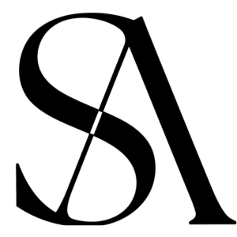
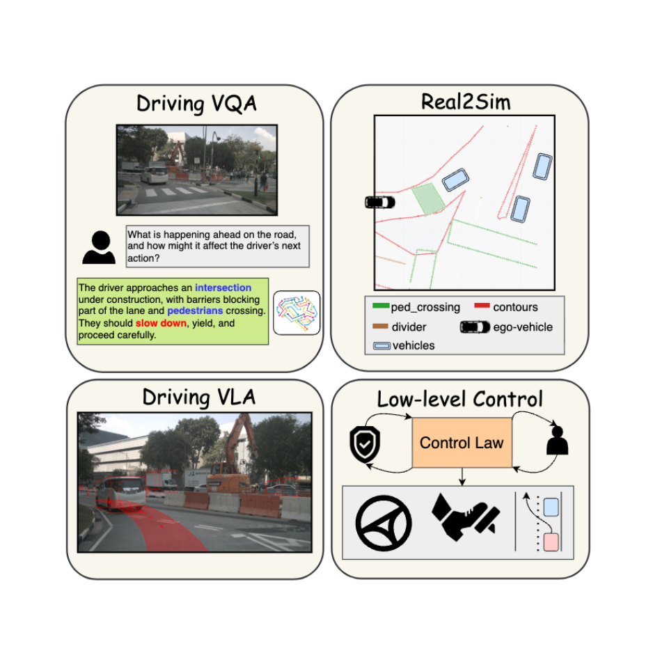
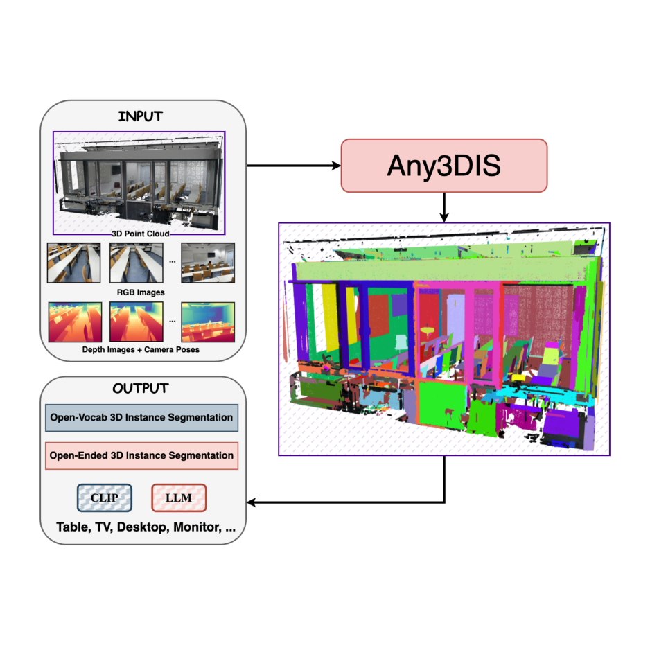
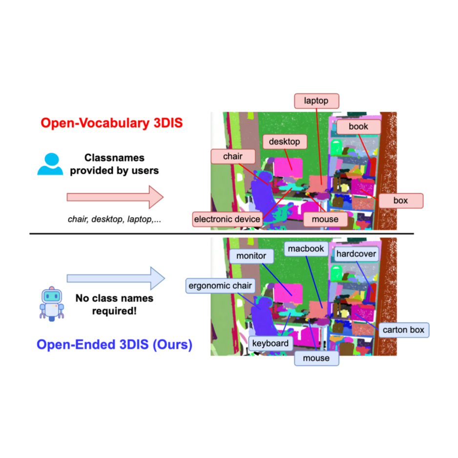
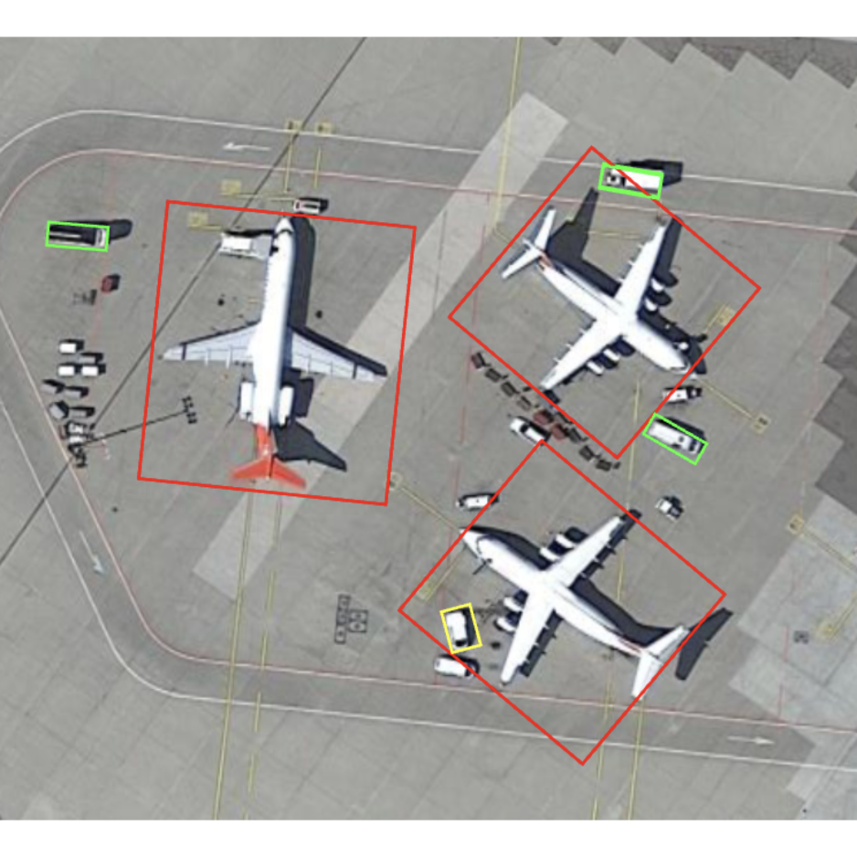
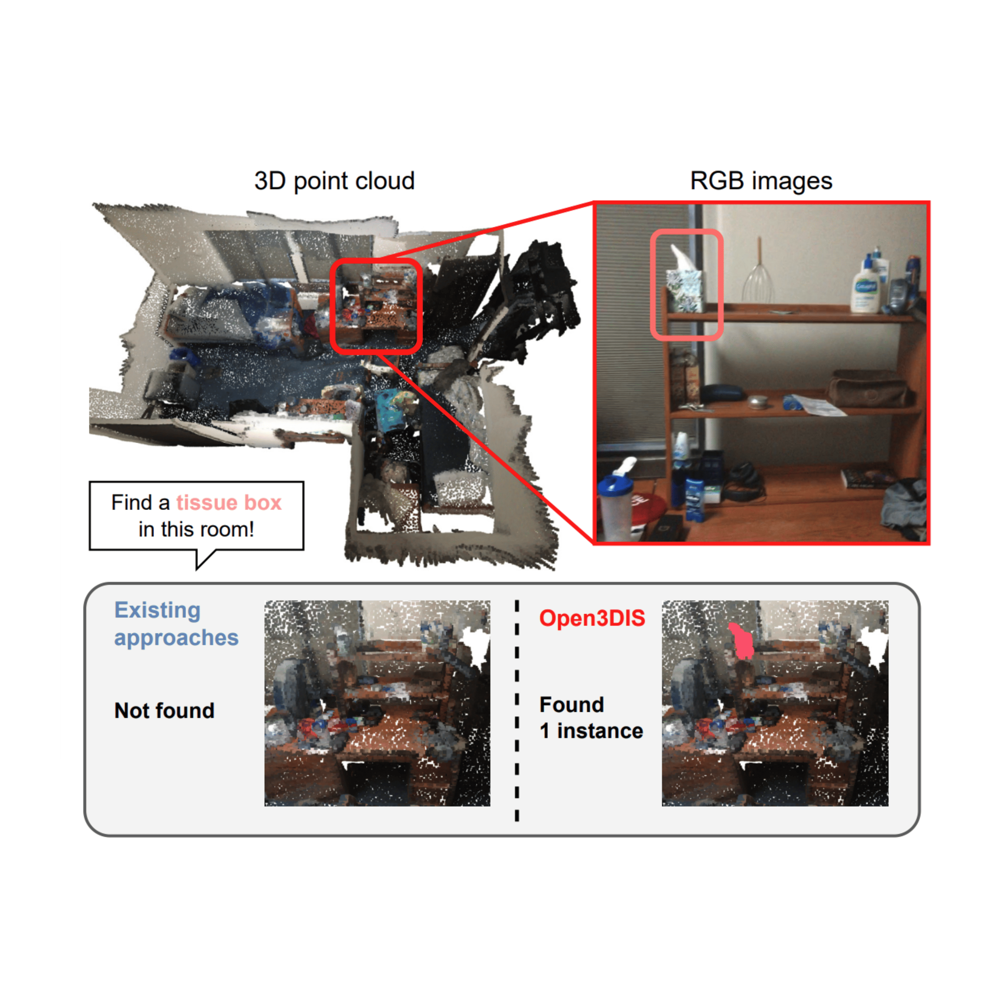

Ph.D. Student @ University of Maryland, College Park Working on |
I’m a PhD student at University of Maryland, College Park advised by Prof. Ming C. Lin!
I work at StackAV (previously ArgoAI), in close collaboration with Dr. Sudipta N. Sinha. Previously, I worked as a Research Engineer at SpreeAI, where my work focuses on multimodal representations in collaboration with at Dr. Aayush Bansal and Dr. Minh Vo. I was an AI Research Resident at VinAI Research (acquired by Qualcomm), where I worked on 3D scene understanding under the supervision of Dr. Anh Tran and Prof. Cuong Pham.
My research focuses on 3D/4D reconstruction and understanding, particularly on developing scalable methods that jointly recover geometry, motion, and semantics from multi-view images and videos.
{kind=link}
News
Experience

Highlighted Research · See Full List At Scholar
We introduce Scale3D, a novel framework for Scalable 3D reconstruction and understanding.

We introduce OpenVO, a novel framework for Open-world Visual Odometry (VO) with temporal awareness under limited input conditions.

A novel class-agnostic approach for 3D instance segmentation that leverages 2D mask tracking to segment 3D objects in point cloud scenes.

Introducing the Vocablulary-Free 3D point cloud instance segmentation with different solid baselines and a novel pointwise method using multimodal LLM.

Hybrid-Anchor Rotation Detector (HA-RDet), which combines the advantages of both anchor-based and anchor-free schemes for oriented object detection.

Tackling the open-vocabulary 3D point cloud instance segmentation by using 2D prior.
Awards and Achievements
- Compute Champion Award CVPR: Highest recognition in methodology, and reproducibility. (2026)
- UMD Dean’ Fellowship: Awarded to candidates with exceptional academic records. (2025-2027)
- 1st Prize CVPR Workshop: VinAI-3DIS ranked top-1 in OpenSUN3D CVPR workshop. (2024)
- 2nd Prize ICCV Workshop: VinAI-3DIS ranked top-2 in OpenSUN3D ICCV workshop. (2023)
- Best Thesis Award: Awarded to thesis with the highest grade. (2023)
- 3rd Prize UIT AI Challenge: The team ranked top-3 in Scene Text recognition challenge. (2023)
- 2nd Prize UCPC: Ranked top-2 in UIT Collegiate Programming Contest. (2022)
- Expert Codeforces: Reaching Expert title on Codeforces – Competitive Programming platform. (2022)
- 1st Prize UIT-AlgoBootcamp: Winning Competitive Programming Competition at UIT. (2021)
- Outstanding Student Scholarship: Awarded to students with the best academic performance. (2021)
- Outstanding Student in Physics: Awarded to students with the highest GPA in Physics. (2020)
Service
- IEEE/CVF Computer Vision and Pattern Recognition (CVPR’24,26)
- IEEE/CVF International Conference on Computer Vision (ICCV’25)
- European Conference on Computer Vision (ECCV’24)
- International Conference on Learning Representations (ICLR’25)
- Neural Information Processing Systems (NeurIPS’24,26)
- British Machine Vision Conference (BMVC’25)
- Transactions on Machine Learning Research (TMLR’25,26)
- CMSC420 (Fall’25): Advanced Data Structures
- CMSC421 (Spring’26): Introduction to AI